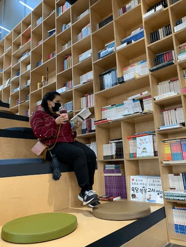

Paju is an amazing city! full of books everywhere. The perfect place for any booklover. When I went to Paju for the first time I originally did not know that it was officially Korea's book city. I just took a bus to a random location and got off. What I found was amazing though! Large publishers like Munhakdongne and others are located here. Not only can you find publishers you can also find book manufacturing facilities. Everything form book creation to manufacturing is located in one location.
Since this location is made for booklovers it not only caters to business but also to entertainment. There are many beautiful instagram worthy locations to take beautiful photos with rose fences and vined filled buildings, but there are also book cafes lining every corner of the city filled with books two to three stories high. Every book in these cafe's are available for clients to read for free. Paju is every bit a book lovers dream.
